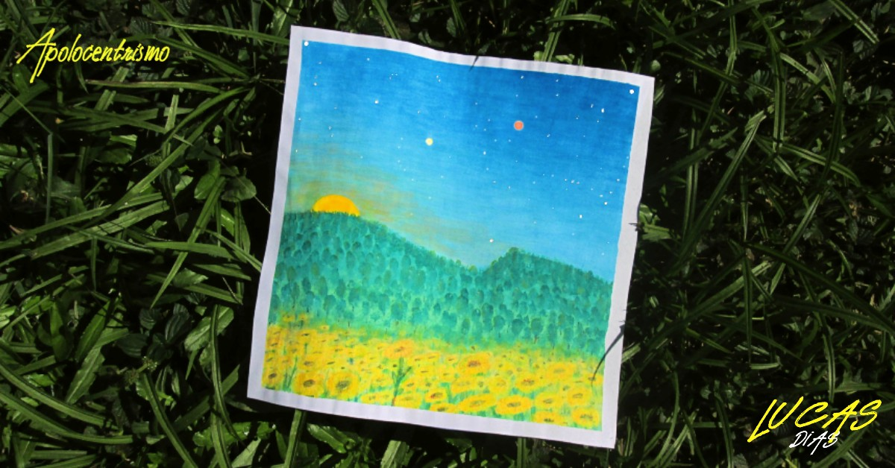

EP Apolocentrismo
Descrição do Projeto
O EP Apolocentrismo foi totalmente produzido de forma independente em home-estúdio pelo autor e amigos musicistas colaboradores.
A temátca é referente ao período em que se deu a concepção e desenvolvimento deste álbum. A pandemia, e o isolamento social que se fez necessário, trouxeram reflexões e inspirações que se tornaram as canções apresentadas no EP.
O título da obra vem da junção de temas e estéticas abordadas: Apolo - Deus do sol e deus da poesia na mitologia grega, e também nome de uma das mais importantes missões espaciais da história. Centrismo - Vem de Heliocentrismo e a toda alusão ao sistema solar que existe nas tracks. Este nome surgiu em uma conversa com um dos amigos que colaboraram com o EP, aliás, valeu pela super dica @tiagooliveira018 !

Para ouvir, acesse: Apolocentrismo
← Voltar ao portfolio